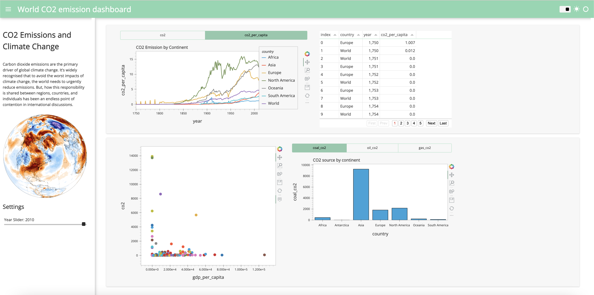
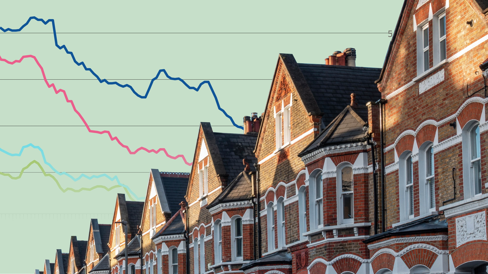
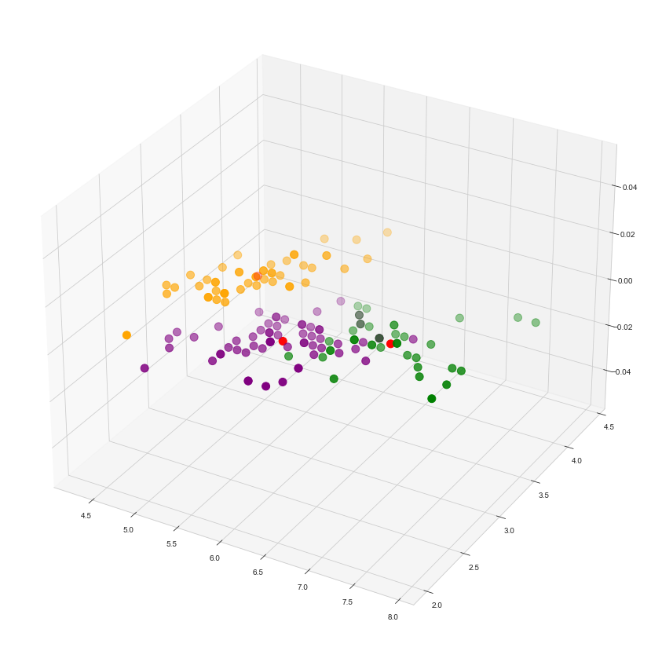

COVID-19
Dashboard
Performed Exploratory Data Analysis on COVID-19 Data using SQL and visualise insights on Tableau

Aspring Data Analyst/Scientist (Python,SQL,Tableau,MachineLearning) @GitHub
Performed Exploratory Data Analysis on COVID-19 Data using SQL and visualise insights on Tableau
Using Machine Learning Algorithms (Logistic Regression, k-Nearest Neighbours, Decision Tree Classifier) to determine whether a transaction is fraudulent or legitimate, using the Undersampling method to deal with heavily unbalanced dataset, scaling and cross-validation

Interactive Dashboard in Python with Panel (an open source library used for building web applications and interactive dashboard). The dashboard displays insights on CO2 Emission Data throughout Human History. I have performed my own Exploratory Data Analysis on the Data on CO2 and Greenhouse Gas Emissions by Our World Dataset

Using ML Algorithms (Random Forest, Gradient Boosting Regressor) to predict price of houses

Using Unsupervised Machine Learning Algorithm (k-means clustering) to classify each Iris flower to its relative species (Setosa, Versicolor, Virginica)
London
Greater London